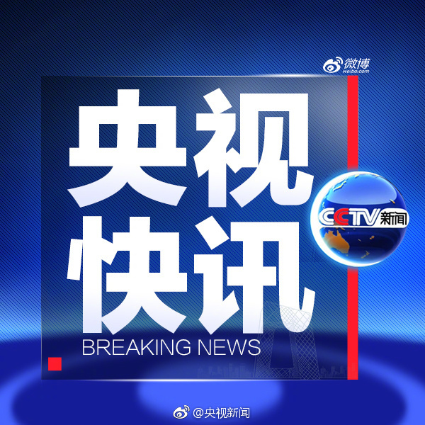

和FBB的罚款相比，长春长生的91亿罚款真不算多。
@央视新闻:
【长春长生公司违法违规生产狂犬病疫苗 被罚没91亿元 高俊芳等不得从事药品生产经营活动】10月16日，国家药品监督管理局和吉林省食品药品监督管理局依法从严对长春长生生物科技有限责任公司（以下简称“长春长生公司”）违法违规生产狂犬病疫苗作出行政处罚。
行政处罚决定书载明，长春长生公司存在以下八项违法事实：一是将不同批次的原液进行勾兑配制，再对勾兑合批后的原液重新编造生产批号；二是更改部分批次涉案产品的生产批号或实际生产日期；三是使用过期原液生产部分涉案产品；四是未按规定方法对成品制剂进行效价测定；五是生产药品使用的离心机变更未按规定备案；六是销毁生产原始记录，编造虚假的批生产记录；七是通过提交虚假资料骗取生物制品批签发合格证；八是为掩盖违法事实而销毁硬盘等证据。
行政处罚决定书认定，上述行为违反了《中华人民共和国药品管理法》及其实施条例，以及《药品生产质量管理规范》《药品生产监督管理办法》《生物制品批签发管理办法》等法律法规和规章。
依据行政处罚管辖有关规定，国家药品监督管理局和吉林省食品药品监督管理局分别对长春长生公司作出多项行政处罚。国家药品监督管理局撤销长春长生公司狂犬病疫苗（国药准字S20120016）药品批准证明文件；撤销涉案产品生物制品批签发合格证，并处罚款1203万元。吉林省食品药品监督管理局吊销其《药品生产许可证》；没收违法生产的疫苗、违法所得18.9亿元，处违法生产、销售货值金额三倍罚款72.1亿元，罚没款共计91亿元；此外，对涉案的高俊芳等十四名直接负责的主管人员和其他直接责任人员作出依法不得从事药品生产经营活动的行政处罚。涉嫌犯罪的，由司法机关依法追究刑事责任。（央视记者余静英）
行政处罚决定书载明，长春长生公司存在以下八项违法事实：一是将不同批次的原液进行勾兑配制，再对勾兑合批后的原液重新编造生产批号；二是更改部分批次涉案产品的生产批号或实际生产日期；三是使用过期原液生产部分涉案产品；四是未按规定方法对成品制剂进行效价测定；五是生产药品使用的离心机变更未按规定备案；六是销毁生产原始记录，编造虚假的批生产记录；七是通过提交虚假资料骗取生物制品批签发合格证；八是为掩盖违法事实而销毁硬盘等证据。
行政处罚决定书认定，上述行为违反了《中华人民共和国药品管理法》及其实施条例，以及《药品生产质量管理规范》《药品生产监督管理办法》《生物制品批签发管理办法》等法律法规和规章。
依据行政处罚管辖有关规定，国家药品监督管理局和吉林省食品药品监督管理局分别对长春长生公司作出多项行政处罚。国家药品监督管理局撤销长春长生公司狂犬病疫苗（国药准字S20120016）药品批准证明文件；撤销涉案产品生物制品批签发合格证，并处罚款1203万元。吉林省食品药品监督管理局吊销其《药品生产许可证》；没收违法生产的疫苗、违法所得18.9亿元，处违法生产、销售货值金额三倍罚款72.1亿元，罚没款共计91亿元；此外，对涉案的高俊芳等十四名直接负责的主管人员和其他直接责任人员作出依法不得从事药品生产经营活动的行政处罚。涉嫌犯罪的，由司法机关依法追究刑事责任。（央视记者余静英）
- 